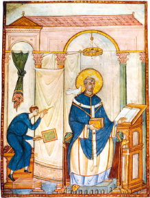
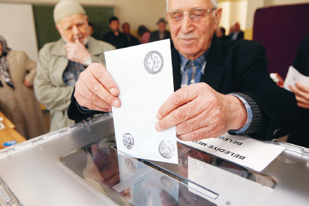
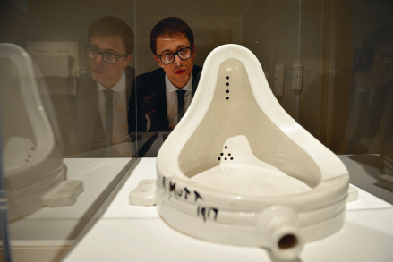
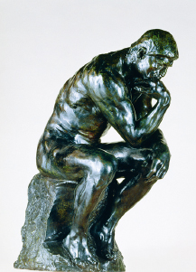
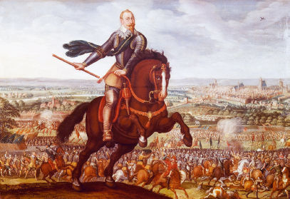
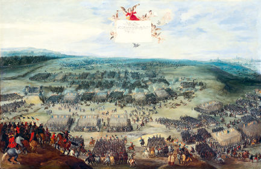
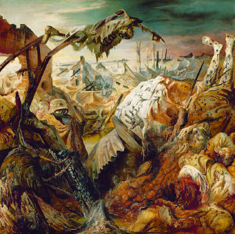
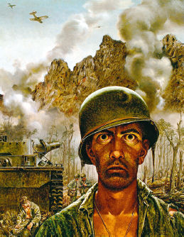

The modern deal offers us power, on condition that we renounce our belief in a great cosmic plan that gives meaning to life. Yet when you examine the deal closely, you find a cunning escape clause. If humans somehow manage to find meaning without deriving it from a great cosmic plan, this is not considered a breach of contract.
This escape clause has been the salvation of modern society, for it is impossible to sustain order without meaning. The great political, artistic and religious project of modernity has been to find a meaning to life that is not rooted in some great cosmic plan. We are not actors in a divine drama, and nobody cares about us and our deeds, so nobody sets limits to our power – but we are still convinced our lives have meaning.
As of 2016, humankind indeed manages to hold the stick at both ends. Not only do we possess far more power than ever before, but against all expectations, God’s death did not lead to social collapse. Throughout history prophets and philosophers have argued that if humans stopped believing in a great cosmic plan, all law and order would vanish. Yet today, those who pose the greatest threat to global law and order are precisely those people who continue to believe in God and His all-encompassing plans. God-fearing Syria is a far more violent place than the atheist Netherlands.
If there is no cosmic plan, and we are not committed to any divine or natural laws, what prevents social collapse? How come you can travel for thousands of kilometres, from Amsterdam to Bucharest or from New Orleans to Montreal, without being kidnapped by slave-traders, ambushed by outlaws or killed by feuding tribes?
Look Inside
The antidote to a meaningless and lawless existence was provided by humanism, a revolutionary new creed that conquered the world during the last few centuries. The humanist religion worships humanity, and expects humanity to play the part that God played in Christianity and Islam, and that the laws of nature played in Buddhism and Daoism. Whereas traditionally the great cosmic plan gave meaning to the life of humans, humanism reverses the roles, and expects the experiences of humans to give meaning to the great cosmos. According to humanism, humans must draw from within their inner experiences not only the meaning of their own lives, but also the meaning of the entire universe. This is the primary commandment humanism has given us: create meaning for a meaningless world.
Accordingly, the central religious revolution of modernity was not losing faith in God; rather, it was gaining faith in humanity. It took centuries of hard work. Thinkers wrote pamphlets, artists composed poems and symphonies, politicians struck deals – and together they convinced humanity that it can imbue the universe with meaning. To grasp the depth and implications of the humanist revolution, consider how modern European culture differs from medieval European culture. People in London, Paris or Toledo in 1300 did not believe that humans could determine by themselves what is good and what is evil, what is right and what is wrong, what is beautiful and what is ugly. Only God could create and define goodness, righteousness and beauty.
Although humans were viewed as enjoying unique abilities and opportunities, they were also seen as ignorant and corruptible beings. Without external supervision and guidance, humans could never understand the eternal truth, and would instead be drawn to fleeting sensual pleasures and worldly delusions. In addition, medieval thinkers pointed out that humans are mortal, and their opinions and feelings are as fickle as the wind. Today I love something with all my heart, tomorrow I am disgusted by it, and next week I am dead and buried. Hence any meaning that depends on human opinion is necessarily fragile and ephemeral. Absolute truths, and the meaning of life and of the universe, must therefore be based on some eternal law emanating from a superhuman source.
This view made God the supreme source not only of meaning, but also of authority. Meaning and authority always go hand in hand. Whoever determines the meaning of our actions – whether they are good or evil, right or wrong, beautiful or ugly – also gains the authority to tell us what to think and how to behave.
God’s role as the source of meaning and authority was not just a philosophical theory. It affected every facet of daily life. Suppose that in 1300, in some small English town, a married woman took a fancy to the next-door neighbour and had sex with him. As she sneaked back home, hiding a smile and straightening her dress, her mind began to race: ‘What was that all about? Why did I do it? Was it good or bad? What does it imply about me? Should I do it again?’ In order to answer such questions, the woman was supposed to go to the local priest, confess and ask the holy father for guidance. The priest was well versed in scriptures, and these sacred texts revealed to him exactly what God thought about adultery. Based on the eternal word of God, the priest could determine beyond all doubt that the woman had committed a mortal sin, that if she doesn’t make amends she will end up in hell, and that she ought to repent immediately, donate ten gold coins to the coming crusade, avoid eating meat for the next six months and make a pilgrimage to the tomb of St Thomas à Becket at Canterbury. And it goes without saying that she must never repeat her awful sin.
Today things are very different. For centuries humanism has been convincing us that we are the ultimate source of meaning, and that our free will is therefore the highest authority of all. Instead of waiting for some external entity to tell us what’s what, we can rely on our own feelings and desires. From infancy we are bombarded with a barrage of humanist slogans counselling us: ‘Listen to yourself, follow your heart, be true to yourself, trust yourself, do what feels good.’ Jean-Jacques Rousseau summed it all up in his novel Émile, the eighteenth-century bible of feeling. Rousseau held that when looking for the rules of conduct in life, he found them ‘in the depths of my heart, traced by nature in characters which nothing can efface. I need only consult myself with regard to what I wish to do; what I feel to be good is good, what I feel to be bad is bad.’1
Accordingly, when a modern woman wants to understand the meaning of an affair she is having, she is far less prone to blindly accept the judgements of a priest or an ancient book. Instead, she will carefully examine her feelings. If her feelings aren’t very clear, she will call a good friend, meet for coffee and pour out her heart. If things are still vague, she will go to her therapist, and tell him all about it. Theoretically, the modern therapist occupies the same place as the medieval priest, and it is an overworked cliché to compare the two professions. Yet in practice, a huge chasm separates them. The therapist does not possess a holy book that defines good and evil. When the woman finishes her story, it is highly unlikely that the therapist will burst out: ‘You wicked woman! You have committed a terrible sin!’ It is equally unlikely that he will say, ‘Wonderful! Good for you!’ Instead, no matter what the woman may have done and said, the therapist is most likely to ask in a caring voice, ‘Well, how do you feel about what happened?’
True, the therapist’s bookshelf sags under the weight of Freud, Jung and the Diagnostic and Statistical Manual of Mental Disorders (DSM). Yet these are not holy scriptures. The DSM diagnoses the ailments of life, not the meaning of life. Most psychologists believe that only human feelings are authorised to determine the true meaning of our actions. Hence no matter what the therapist thinks about his patient’s affair, and no matter what Freud, Jung and the DSM think about affairs in general, the therapist should not force his views on the patient. Instead, he should help her examine the most secret chambers of her heart. There and only there will she find the answers. Whereas medieval priests had a hotline to God, and could distinguish for us between good and evil, modern therapists merely help us get in touch with our own inner feelings.
This partly explains the changing fortunes of the institution of marriage. In the Middle Ages, marriage was considered a sacrament ordained by God, and God also authorised the father to marry his children according to his wishes and interests. An extramarital affair was accordingly a brazen rebellion against both divine and parental authority. It was a mortal sin, no matter what the lovers felt and thought about it. Today people marry for love, and it is their inner feelings that give value to this bond. Hence, if the very same feelings that once drove you into the arms of one man now drive you into the arms of another, what’s wrong with that? If an extramarital affair provides an outlet for emotional and sexual desires that are not satisfied by your spouse of twenty years, and if your new lover is kind, passionate and sensitive to your needs – why not enjoy it?
But wait a minute, you might say. We cannot ignore the feelings of the other concerned parties. The woman and her lover might feel wonderful in each other’s arms, but if their respective spouses find out, everybody will probably feel awful for quite some time. And if it leads to divorce, their children might carry the emotional scars for decades. Even if the affair is never discovered, hiding it involves a lot of tension, and may lead to growing feelings of alienation and resentment.
The most interesting discussions in humanist ethics concern situations like extramarital affairs, when human feelings collide. What happens when the same action causes one person to feel good, and another to feel bad? How do we weigh the feelings against each other? Do the good feelings of the two lovers outweigh the bad feelings of their spouses and children?
It doesn’t matter what you think about this particular question. It is far more important to understand the kind of arguments both sides deploy. Modern people have differing ideas about extramarital affairs, but no matter what their position is, they tend to justify it in the name of human feelings rather than in the name of holy scriptures and divine commandments. Humanism has taught us that something can be bad only if it causes somebody to feel bad. Murder is wrong not because some god once said, ‘Thou shalt not kill.’ Rather, murder is wrong because it causes terrible suffering to the victim, to his family members, and to his friends and acquaintances. Theft is wrong not because some ancient text says, ‘Thou shalt not steal.’ Rather, theft is wrong because when you lose your property, you feel bad about it. And if an action does not cause anyone to feel bad, there can be nothing wrong about it. If the same ancient text says that God commanded us not to make any images of either humans or animals (Exodus 20:4), but I enjoy sculpting such figures, and I don’t harm anyone in the process – then what could possibly be wrong with it?
The same logic dominates current debates on homosexuality. If two adult men enjoy having sex with one another, and they don’t harm anyone while doing so, why should it be wrong, and why should we outlaw it? It is a private matter between these two men, and they are free to decide about it according to their inner feelings. In the Middle Ages, if two men confessed to a priest that they were in love with one another, and that they never felt so happy, their good feelings would not have changed the priest’s damning judgement – indeed, their happiness would only have worsened the situation. Today, in contrast, if two men love one another, they are told: ‘If it feels good – do it! Don’t let any priest mess with your mind. Just follow your heart. You know best what’s good for you.’
Interestingly enough, today even religious zealots adopt this humanistic discourse when they want to influence public opinion. For example, every year for the past decade the Israeli LGBT community holds a gay parade in the streets of Jerusalem. It is a unique day of harmony in this conflict-riven city, because it is the one occasion when religious Jews, Muslims and Christians suddenly find a common cause – they all fume in accord against the gay parade. What’s really interesting, though, is the argument they use. They don’t say, ‘You shouldn’t hold a gay parade because God forbids homosexuality.’ Rather, they explain to every available microphone and TV camera that ‘seeing a gay parade passing through the holy city of Jerusalem hurts our feelings. Just as gay people want us to respect their feelings, they should respect ours.’
On 7 January 2015 Muslim fanatics massacred several staff members of the French magazine Charlie Hebdo, because the magazine published caricatures of the prophet Muhammad. In the following days, many Muslim organisations condemned the attack, yet some could not resist adding a ‘but’ clause. For example, the Egyptian Journalists Syndicate denounced the terrorists for their use of violence, and in the same breath denounced the magazine for ‘hurting the feelings of millions of Muslims across the world’.2 Note that the Syndicate did not blame the magazine for disobeying God’s will. That’s what we call progress.
Our feelings provide meaning not only for our private lives, but also for social and political processes. When we want to know who should rule the country, what foreign policy to adopt and what economic steps to take, we don’t look for the answers in scriptures. Nor do we obey the commands of the Pope or the Council of Nobel Laureates. Rather, in most countries, we hold democratic elections and ask people what they think about the matter at hand. We believe that the voter knows best, and that the free choices of individual humans are the ultimate political authority.
Yet how does the voter know what to choose? Theoretically at least, the voter is supposed to consult his or her innermost feelings, and follow their lead. It is not always easy. In order to get in touch with my feelings, I need to filter out the empty propaganda slogans, the endless lies of ruthless politicians, the distracting noise created by cunning spin doctors, and the learned opinions of hired pundits. I need to ignore all this racket, and attend only to my authentic inner voice. And then my authentic inner voice whispers in my ear ‘Vote Cameron’ or ‘Vote Modi’ or ‘Vote Clinton’ or whomever, and I put a cross against that name on the ballot paper – and that’s how we know who should rule the country.
In the Middle Ages this would have been considered the height of foolishness. The fleeting feelings of ignorant commoners were hardly a sound basis for important political decisions. When England was torn apart by the Wars of the Roses, nobody thought to end the conflict by having a national referendum, in which each bumpkin and wench cast a vote for either Lancaster or York. Similarly, when Pope Urban II launched the First Crusade in 1095, he didn’t claim it was the people’s will. It was God’s will. Political authority came down from heaven – it didn’t rise up from the hearts and minds of mortal humans.
The Holy Spirit, in the guise of a dove, delivers an ampulla full of sacred oil for the baptism of King Clovis, founder of the Frankish kingdom (illustration from the Grandes Chroniques de France, c.1380). According to the founding myth of France, this ampulla was henceforth kept in Rheims Cathedral, and all subsequent French kings were anointed with the divine oil at their coronation. Each coronation thus involved a miracle, as the empty ampulla spontaneously refilled with oil. This indicated that God himself chose the king and gave him His blessing. If God did not want Louis IX or Louis XIV or Louis XVI to be king, the ampulla would not have refilled.
© Bibliothèque nationale de France, RC-A-02764, Grandes Chroniques de France de Charles V, folio 12v.
What’s true of ethics and politics is also true of aesthetics. In the Middle Ages art was governed by objective yardsticks. The standards of beauty did not reflect human fads. Rather, human tastes were supposed to conform to superhuman dictates. This made perfect sense in a period when people believed that art was inspired by superhuman forces rather than by human feelings. The hands of painters, poets, composers and architects were supposedly moved by muses, angels and the Holy Spirit. Many a time when a composer penned a beautiful hymn, no credit was given to the composer, for the same reason it was not given to the pen. The pen was held and directed by human fingers which in turn were held and directed by the hand of God.
Medieval scholars held on to a classical Greek theory, according to which the movements of the stars across the sky create heavenly music that permeates the entire universe. Humans enjoy physical and mental health when the inner movements of their body and soul are in harmony with the heavenly music created by the stars. Human music should therefore echo the divine melody of the cosmos, rather than reflect the ideas and caprices of flesh-and-blood composers. The most beautiful hymns, songs and tunes were usually attributed not to the genius of some human artist but to divine inspiration.

Pope Gregory the Great composes the eponymous Gregorian chants. The Holy Spirit, in its favourite dove costume, sits on his right shoulder, whispering the chants in his ear. The Holy Spirit is the chants’ true author, whereas Gregory is just a conduit. God is the ultimate source of art and beauty.
Manuscript: Registrum Gregorii, c.983 © Archiv Gerstenberg/ullstein bild via Getty Images.
Such views are no longer in vogue. Today humanists believe that the only source for artistic creation and aesthetic value is human feelings. Music is created and judged by our inner voice, which need follow neither the rhythms of the stars nor the commands of muses and angels. For the stars are mute, while muses and angels exist only in our own imagination. Modern artists seek to get in touch with themselves and their feelings, rather than with God. No wonder then that when we come to evaluate art, we no longer believe in any objective yardsticks. Instead, we again turn to our subjective feelings. In ethics, the humanist motto is ‘if it feels good – do it’. In politics, humanism instructs us that ‘the voter knows best’. In aesthetics, humanism says that ‘beauty is in the eye of the beholder’.
The very definition of art is consequently up for grabs. In 1917 Marcel Duchamp took an ordinary mass-produced urinal, named it Fountain, signed his name at the bottom, declared it a work of art and placed it in a Paris museum. Medieval people would not have bothered to even argue about it. Why waste oxygen on such utter nonsense? Yet in the modern humanist world, Duchamp’s work is considered an important artistic milestone. In countless classrooms across the world, first-year art students are shown an image of Duchamp’s Fountain, and at a sign from the teacher, all hell breaks loose. It is art! No it isn’t! Yes it is! No way! After letting the students release some steam, the teacher focuses the discussion by asking ‘What exactly is art? And how do we determine whether something is a work of art or not?’ After a few more minutes of back and forth, the teacher steers the class in the right direction: ‘Art is anything people think is art, and beauty is in the eye of the beholder.’ If people think that a urinal is a beautiful work of art – then it is. What higher authority is there that can tell people they are wrong? Today, copies of Duchamp’s masterpiece are presented in some of the most important museums in the world, including the San Francisco Museum of Modern Art, the National Gallery of Canada, the Tate Gallery in London and the Pompidou Centre in Paris. (The copies are placed in the museums’ showrooms, not in the lavatories.)
Such humanist approaches have had a deep impact on the economic field as well. In the Middle Ages, guilds controlled the production process, leaving little room for the initiative or taste of individual artisans and customers. The carpenters’ guild determined what was a good chair, the bakers’ guild defined good bread, and the Meistersinger guild decided which songs were first class and which were rubbish. Meanwhile princes and city councils regulated salaries and prices, occasionally forcing people to buy fixed amounts of goods at a non-negotiable price. In the modern free market, all these guilds, councils and princes have been superseded by a new supreme authority – the free will of the customer.
Suppose Toyota decides to produce the perfect car. It sets up a committee of experts from various fields: it hires the best engineers and designers, brings together the finest physicists and economists, and even consults with several sociologists and psychologists. To be on the safe side, they throw in a Nobel laureate or two, an Oscar-winning actress and some world-famous artists. After five years of research and development, they unveil the perfect car. Millions of vehicles are produced, and shipped to car agencies across the world. Yet nobody buys the car. Does it mean that the customers are making a mistake, and that they don’t know what’s good for them? No. In a free market, the customer is always right. If customers don’t want it, it means that it is not a good car. It doesn’t matter if all the university professors and all the priests and mullahs cry out from every pulpit that this is a wonderful car – if the customers reject it, it is a bad car. Nobody has the authority to tell customers that they are wrong, and heaven forbid that a government would try to force citizens to buy a particular car against their will.
What’s true of cars is true of all other products. Listen, for example, to Professor Leif Andersson from the University of Uppsala. He specialises in the genetic enhancement of farm animals, in order to create faster-growing pigs, dairy cows that produce more milk, and chickens with extra meat on their bones. In an interview for the newspaper Haaretz, reporter Naomi Darom confronted Andersson with the fact that such genetic manipulations might cause much suffering to the animals. Already today ‘enhanced’ dairy cows have such heavy udders that they can barely walk, while ‘upgraded’ chickens cannot even stand up. Professor Andersson had a firm answer: ‘Everything comes back to the individual customer and to the question how much the customer is willing to pay for meat . . . we must remember that it would be impossible to maintain current levels of global meat consumption without the [enhanced] modern chicken . . . if customers ask us only for the cheapest meat possible – that’s what the customers will get . . . Customers need to decide what is most important to them – price, or something else.’3
Professor Andersson can go to sleep at night with a clean conscience. The fact that customers are buying his enhanced animal products implies that he is meeting their needs and desires and is therefore doing good. By the same logic, if some multinational corporation wants to know whether it lives up to its ‘Don’t be evil’ motto, it need only take a look at its bottom line. If it makes loads of money, it means that millions of people like its products, which implies that it is a force for good. If someone objects and says that people might make the wrong choice, he will be quickly reminded that the customer is always right, and that human feelings are the source of all meaning and authority. If millions of people freely choose to buy the company’s products, who are you to tell them that they are wrong?
Finally, the rise of humanist ideas has revolutionised the educational system too. In the Middle Ages the source of all meaning and authority was external, hence education focused on instilling obedience, memorising scriptures and studying ancient traditions. Teachers presented pupils with a question, and the pupils had to remember how Aristotle, King Solomon or St Thomas Aquinas answered it.
Humanism in Five Images

Humanist Politics: the voter knows best.
© Sadik Gulec/Shutterstock.com.
Humanist Economics: the customer is always right.
© CAMERIQUE/ClassicStock/Corbis.

Humanist Aesthetics: beauty is in the eyes of the beholder. (Marcel Duchamp’s Fountain in a special exhibition of modern art at the National Gallery of Scotland.)
© Jeff J Mitchell/Getty Images.
Humanist Ethics: if it feels good – do it!
© Molly Landreth/Getty Images.

Humanist Education: think for yourself!
The Thinker, 1880–81 (bronze), Rodin, Auguste, Burrell Collection, Glasgow © Culture and Sport Glasgow (Museums)/Bridgeman Images.
In contrast, modern humanist education believes in teaching students to think for themselves. It is good to know what Aristotle, Solomon and Aquinas thought about politics, art and economics; yet since the supreme source of meaning and authority lies within ourselves, it is far more important to know what you think about these matters. Ask a teacher – whether in kindergarten, school or college – what she is trying to teach. ‘Well,’ she will answer, ‘I teach the kids history, or quantum physics, or art – but above all I try to teach them to think for themselves.’ It may not always succeed, but that is what humanist education seeks to do.
As the source of meaning and authority was relocated from the sky to human feelings, the nature of the entire cosmos changed. The exterior universe – hitherto teeming with gods, muses, fairies and ghouls – became empty space. The interior world – hitherto an insignificant enclave of crude passions – became deep and rich beyond measure. Angels and demons were transformed from real entities roaming the forests and deserts of the world into inner forces within our own psyche. Heaven and hell too ceased to be real places somewhere above the clouds and below the volcanoes, and were instead interpreted as internal mental states. You experience hell every time you ignite the fires of anger and hatred within your heart; and you enjoy heavenly bliss every time you forgive your enemies, repent your own misdeeds and share your wealth with the poor.
When Nietzsche declared that God is dead, this is what he meant. At least in the West, God has become an abstract idea that some accept and others reject, but it makes little difference either way. In the Middle Ages, without a god I had no source of political, moral and aesthetic authority. I could not tell what was right, good or beautiful. Who could live like that? Today, in contrast, it is very easy not to believe in God, because I pay no price for my unbelief. I can be a complete atheist, and still draw a very rich mix of political, moral and aesthetical values from my inner experience.
If I believe in God at all, it is my choice to believe. If my inner self tells me to believe in God – then I believe. I believe because I feel God’s presence, and my heart tells me He is there. But if I no longer feel God’s presence, and if my heart suddenly tells me that there is no God – I will cease believing. Either way, the real source of authority is my own feelings. So even while saying that I believe in God, the truth is I have a much stronger belief in my own inner voice.
Follow the Yellow Brick Road
Like every other source of authority, feelings have their shortcomings. Humanism assumes that each human has a single authentic inner self, but when I try to listen to it, I often encounter either silence or a cacophony of contending voices. In order to overcome this problem, humanism has upheld not just a new source of authority, but also a new method for getting in touch with authority and gaining true knowledge.
In medieval Europe, the chief formula for knowledge was: Knowledge = Scriptures × Logic.* If we want to know the answer to some important question, we should read scriptures, and use our logic to understand the exact meaning of the text. For example, scholars who wished to know the shape of the earth scanned the Bible looking for relevant references. One pointed out that in Job 38:13, it says that God can ‘take hold of the edges of the earth, and the wicked be shaken out of it’. This implies – reasoned the pundit – that because the earth has ‘edges’ of which we can ‘take hold’, it must be a flat square. Another sage rejected this interpretation, calling attention to Isaiah 40:22, where it says that God ‘sits enthroned above the circle of the earth’. Isn’t that proof that the earth is round? In practice, that meant that scholars sought knowledge by spending years in schools and libraries, reading more and more texts, and sharpening their logic so they could understand the texts correctly.
The Scientific Revolution proposed a very different formula for knowledge: Knowledge = Empirical Data × Mathematics. If we want to know the answer to some question, we need to gather relevant empirical data, and then use mathematical tools to analyse the data. For example, in order to gauge the true shape of the earth, we can observe the sun, the moon and the planets from various locations across the world. Once we have amassed enough observations, we can use trigonometry to deduce not only the shape of the earth, but also the structure of the entire solar system. In practice, that means that scientists seek knowledge by spending years in observatories, laboratories and research expeditions, gathering more and more empirical data, and sharpening their mathematical tools so they could interpret the data correctly.
The scientific formula for knowledge led to astounding breakthroughs in astronomy, physics, medicine and countless other disciplines. But it had one huge drawback: it could not deal with questions of value and meaning. Medieval pundits could determine with absolute certainty that it is wrong to murder and steal, and that the purpose of human life is to do God’s bidding, because scriptures said so. Scientists could not come up with such ethical judgements. No amount of data and no mathematical wizardry can prove that it is wrong to murder. Yet human societies cannot survive without such value judgements.
One way to overcome this difficulty was to continue using the old medieval formula alongside the new scientific method. When faced with a practical problem – such as determining the shape of the earth, building a bridge or curing a disease – we collect empirical data and analyse it mathematically. When faced with an ethical problem – such as determining whether to allow divorce, abortion and homosexuality – we read scriptures. This solution was adopted to some extent by numerous modern societies, from Victorian Britain to twenty-first-century Iran.
However, humanism offered an alternative. As humans gained confidence in themselves, a new formula for attaining ethical knowledge appeared: Knowledge = Experiences × Sensitivity. If we wish to know the answer to any ethical question, we need to connect to our inner experiences, and observe them with the utmost sensitivity. In practice, that means that we seek knowledge by spending years collecting experiences, and sharpening our sensitivity so we could understand these experiences correctly.
What exactly are ‘experiences’? They are not empirical data. An experience is not made of atoms, molecules, proteins or numbers. Rather, an experience is a subjective phenomenon that includes three main ingredients: sensations, emotions and thoughts. At any particular moment my experience comprises everything I sense (heat, pleasure, tension, etc.), every emotion I feel (love, fear, anger, etc.) and whatever thoughts arise in my mind.
And what is ‘sensitivity’? It means two things. Firstly, paying attention to my sensations, emotions and thoughts. Secondly, allowing these sensations, emotions and thoughts to influence me. Granted, I shouldn’t allow every passing breeze to sweep me away. Yet I should be open to new experiences, and permit them to change my views, my behaviour and even my personality.
Experiences and sensitivity build up one another in a never-ending cycle. I cannot experience anything if I have no sensitivity, and I cannot develop sensitivity unless I undergo a variety of experiences. Sensitivity is not an abstract aptitude that can be developed by reading books or listening to lectures. It is a practical skill that can ripen and mature only by applying it in practice.
Take tea, for example. I start by drinking very sweet ordinary tea while reading the morning paper. The tea is little more than an excuse for a sugar rush. One day I realise that between the sugar and the newspaper, I hardly taste the tea at all. So I reduce the amount of sugar, put the paper aside, close my eyes and focus on the tea itself. I begin to register its unique aroma and flavour. Soon I find myself experimenting with different teas, black and green, comparing their exquisite tangs and delicate bouquets. Within a few months, I drop the supermarket labels and buy my tea at Harrods. I develop a particular liking for ‘Panda Dung tea’ from the mountains of Ya’an in Sichuan province, made from leaves of tea trees fertilised by the dung of panda bears. That’s how, one cup at a time, I hone my tea sensitivity and become a tea connoisseur. If in my early tea-drinking days you had served me Panda Dung tea in a Ming Dynasty porcelain goblet, I would not have appreciated it much more than builder’s tea in a paper cup. You cannot experience something if you don’t have the necessary sensitivity, and you cannot develop your sensitivity except by undergoing a long string of experiences.
What’s true of tea is true of all other aesthetic and ethical knowledge. We aren’t born with a ready-made conscience. As we pass through life, we hurt people and people hurt us, we act compassionately and others show compassion to us. If we pay attention, our moral sensitivity sharpens, and these experiences become a source of valuable ethical knowledge about what is good, what is right and who I really am.
Humanism thus sees life as a gradual process of inner change, leading from ignorance to enlightenment by means of experiences. The highest aim of humanist life is to fully develop your knowledge through a large variety of intellectual, emotional and physical experiences. In the early nineteenth century, Wilhelm von Humboldt – one of the chief architects of the modern education system – said that the aim of existence is ‘a distillation of the widest possible experience of life into wisdom’. He also wrote that ‘there is only one summit in life – to have taken the measure in feeling of everything human’.4 This could well be the humanist motto.
According to Chinese philosophy, the world is sustained by the interplay of opposing but complementary forces called yin and yang. This may not be true of the physical world, but it is certainly true of the modern world that has been created by the covenant of science and humanism. Every scientific yang contains within it a humanist yin, and vice versa. The yang provides us with power, while the yin provides us with meaning and ethical judgements. The yang and yin of modernity are reason and emotion, the laboratory and the museum, the production line and the supermarket. People often see only the yang, and imagine that the modern world is dry, scientific, logical and utilitarian – just like a laboratory or a factory. But the modern world is also an extravagant supermarket. No culture in history has ever given such importance to human feelings, desires and experiences. The humanist view of life as a string of experiences has become the founding myth of numerous modern industries, from tourism to art. Travel agents and restaurant chefs do not sell us flight tickets, hotels or fancy dinners – they sell us novel experiences. Similarly, whereas most premodern narratives focused on external events and actions, modern novels, films and poems often revolve around feelings. Graeco-Roman epics and medieval chivalric romances were catalogues of heroic deeds, not feelings. One chapter told how the brave knight fought a monstrous ogre, and killed him. Another chapter recounted how the knight rescued a beautiful princess from a fire-spitting dragon, and killed him. A third chapter narrated how a wicked sorcerer kidnapped the princess, but the knight pursued the sorcerer, and killed him. No wonder that the hero was invariably a knight, rather than a carpenter or a peasant, for peasants performed no heroic deeds.
Crucially, the heroes did not undergo any significant process of inner change. Achilles, Arthur, Roland and Lancelot were fearless warriors with a chivalric world view before they set out on their adventures, and they remained fearless warriors with the same world view at the end. All the ogres they killed and all the princesses they rescued confirmed their courage and perseverance, but ultimately taught them little.
The humanist focus on feelings and experiences, rather than deeds, transformed art. Wordsworth, Dostoevsky, Dickens and Zola cared little for brave knights and derring-do, and instead described how ordinary people and housewives felt. Some people believe that Joyce’s Ulysses represents the apogee of this modern focus on the inner life rather than external actions – in 260,000 words Joyce describes a single day in the life of the Dubliners Stephen Dedalus and Leopold Bloom, who over the course of the day do . . . well, nothing much at all.
Few people have actually read all of Ulysses, but the same principles underpin much of our popular culture too. In the United States, the series Survivor is often credited (or blamed) for turning reality shows into a craze. Survivor was the first reality show to make it to the top of the Nielsen ratings, and in 2007 Time magazine listed it among the hundred greatest TV shows of all time.5 In each season, twenty contenders in minimal swimsuits are isolated on some tropical island. They have to face all kinds of challenges, and each episode they vote out one of their members. The last one left takes home $1 million.
Audiences in Homeric Greece, in the Roman Empire or in medieval Europe would have found the idea familiar and highly attractive. Twenty challengers go in – only one hero comes out. ‘Wonderful!’ a Homeric prince, a Roman patrician or a crusader knight would have thought to himself as he sat down to watch. ‘Surely we are about to see amazing adventures, life-and-death battles and incomparable acts of heroism and betrayal. The warriors will probably stab each other in the back, or spill their entrails for all to see.’
What a disappointment! The back-stabbing and entrails-spilling remain just a metaphor. Each episode lasts about an hour. Out of that, fifteen minutes are taken up by commercials for toothpaste, shampoo and cereals. Five minutes are dedicated to incredibly childish challenges, such as who can throw the most coconuts into a hoop, or who can eat the largest number of bugs in one minute. The rest of the time the ‘heroes’ just talk about their feelings! He said she said, and I felt this and I felt that. If a crusader knight had really sat down to watch Survivor, he would probably have grabbed his battleaxe and smashed the TV out of boredom and frustration.
Today we might think of medieval knights as insensitive brutes. If they lived among us, we would send them to a therapist, who might help them get in touch with themselves. This is what the Tin Man does in The Wizard of Oz. He walks along the yellow brick road with Dorothy and her friends, hoping that when they get to Oz, the great wizard will give him a heart, while the Scarecrow wants a brain and the Lion wants courage. At the end of their journey they discover that the great wizard is a charlatan, and he can’t give them any of these things. But they discover something far more important: everything they wish for is already within themselves. There is no need of some godlike wizard in order to obtain sensitivity, wisdom or bravery. You just need to follow the yellow brick road, and open yourself to whatever experiences come your way.
Exactly the same lesson is learned by Captain Kirk and Captain Jean-Luc Picard as they travel the galaxy in the starship Enterprise, by Huckleberry Finn and Jim as they sail down the Mississippi, by Wyatt and Billy as they ride their Harley-Davidsons in Easy Rider, and by countless other characters in myriad other road movies who leave their home town in Pennsylvania (or perhaps New South Wales), travel in an old convertible (or perhaps a bus), pass through various life-changing experiences, get in touch with themselves, talk about their feelings, and eventually reach San Francisco (or perhaps Alice Springs) as better and wiser individuals.
The Truth About War
The formula Knowledge = Experiences × Sensitivity has changed not just our popular culture, but even our perception of weighty issues like war. Throughout most of history, when people wished to know whether a particular war was just, they asked God, they asked scriptures, and they asked kings, noblemen and priests. Few cared about the opinions and experiences of a common soldier or an ordinary civilian. War narratives such as those of Homer, Virgil and Shakespeare focused on the actions of emperors, generals and outstanding heroes, and though they did not hide the misery of war, this was more than compensated for by a full menu of glory and heroism. Ordinary soldiers appeared as either piles of bodies slaughtered by some Goliath, or a cheering crowd hoisting a triumphant David upon its shoulders.

Jean-Jacques Walter, Gustav Adolph of Sweden at the Battle of Breitenfeld (1631).
© DeAgostini Picture Library/Scala, Florence.
Look, for example, at the painting above of the Battle of Breitenfeld, which took place on 17 September 1631. The painter, Jean-Jacques Walter, glorifies King Gustav Adolph of Sweden, who led his army that day to a decisive victory. Gustav Adolph towers over the battlefield as if he were some god of war. One gets the impression that the king controls the battle like a chess player moving pawns. The pawns themselves are mostly generic figures, or tiny dots in the background. Walter was not interested in how they felt while they charged, fled, killed or died. They are a faceless collective.
Even when painters focused on the battle itself, rather than on the commander, they still looked at it from above, and were far more concerned with collective manoeuvres than with personal feelings. Take, for example, Pieter Snayers’s painting of the Battle of White Mountain in November 1620.
The painting depicts a celebrated Catholic victory in the Thirty Years War over heretical Protestant rebels. Snayers wished to commemorate this victory by painstakingly recording the various formations, manoeuvres and troop movements. You can easily tell the different units, their armament and their place within the order of battle. Snayers gave far less attention to the experiences and feelings of the common soldiers. Like Jean-Jacques Walter, he makes us observe the battle from the Olympian vantage point of gods and kings, and gives us the impression that war is a giant chess game.

Pieter Snayers, The Battle of White Mountain.
© Bpk/Bayerische Staatsgemäldesammlungen.
If you take a closer look – for which you might need a magnifying glass – you realise that The Battle of White Mountain is a bit more complex than a chess game. What at first sight seem to be geometrical abstractions turn upon closer inspection into bloody scenes of carnage. Here and there you can even spot the faces of individual soldiers running or fleeing, firing their guns or impaling an enemy on their pikes. However, these scenes receive their meaning from their place within the overall picture. When we see a cannonball smashing a soldier to bits, we understand it as part of the great Catholic victory. If the soldier is fighting on the Protestant side, his death is a just reward for rebellion and heresy. If the soldier is fighting in the Catholic army, his death is a noble sacrifice for a worthy cause. If we look up, we can see angels hovering high above the battlefield. They are holding a billboard which explains in Latin what happened in this battle, and why it was so important. The message is that God helped Emperor Ferdinand II defeat his enemies on 8 November 1620.
For thousands of years, when people looked at war, they saw gods, emperors, generals and great heroes. But over the last two centuries, the kings and generals have been increasingly pushed to the side, and the limelight shifted onto the common soldier and his experiences. War novels such as All Quiet on the Western Front and war films such as Platoon begin with a young and naïve recruit, who knows little about himself and the world, but carries a heavy burden of hopes and illusions. He believes that war is glorious, our cause is just and the general is a genius. A few weeks of real war – of mud, and blood, and the smell of death – shatter his illusions one after another. If he survives, the naïve recruit will leave war as a much wiser man, who no longer believes the clichés and ideals peddled by teachers, film-makers and eloquent politicians.
Paradoxically, this narrative has become so influential that today it is told over and over again even by teachers, film-makers and eloquent politicians. ‘War is not what you see in the movies!’ warn Hollywood blockbusters such as Apocalypse Now, Full Metal Jacket and Blackhawk Down. Enshrined in celluloid, prose or poetry, the feelings of the ordinary grunt have become the ultimate authority on war, which everyone has learned to respect. As the joke goes, ‘How many Vietnam vets does it take to change a light bulb?’ ‘You wouldn’t know, you weren’t there.’6
Painters too have lost interest in generals on horses and in tactical manoeuvres. Instead, they strive to depict how the common soldier feels. Look again at The Battle of Breitenfeld and The Battle of White Mountain. Now look at the following two pictures, considered masterpieces of twentieth-century war art: The War (Der Krieg) by Otto Dix, and That 2,000 Yard Stare by Tom Lea.
Dix served as a sergeant in the German army during the First World War. Lea covered the Battle of Peleliu Island in 1944 for Life magazine. Whereas Walter and Snayers viewed war as a military and political phenomenon, and wanted us to know what happened in particular battles, Dix and Lea view war as an emotional phenomenon, and want us to know how it feels. They don’t care about the genius of generals or about the tactical details of this or that battle. Dix’s soldier might be in Verdun or Ypres or the Somme – it doesn’t matter which, because war is hell everywhere. Lea’s soldier just happens to be an American GI in Peleliu, but you could see exactly the same 2,000-yard stare on the face of a Japanese soldier in Iwo Jima, a German soldier in Stalingrad or a British soldier in Dunkirk.

Otto Dix, The War (1929–32).
Staatliche Kunstsammlungen, Neue Meister, Dresden, Germany © Lessing Images.

Tom Lea, That 2,000 Yard Stare (1944).
Tom Lea, That 2,000 Yard Stare, 1944. Oil on canvas, 36"x28". LIFE Collection of Art WWII, U.S. Army Center of Military History, Ft. Belvoir, Virginia. © Courtesy of the Tom Lea Institute, El Paso, Texas.
In the paintings of Dix and Lea, the meaning of war does not emanate from tactical movements or divine proclamations. If you want to understand war, don’t look up at the general on the hilltop, or at angels in the sky. Instead, look straight into the eyes of the common soldiers. In Lea’s painting, the gaping eyes of a traumatised soldier open a window onto the terrible truth of war. In Dix’s painting, the truth is so unbearable that it must be partly concealed behind a gas mask. No angels fly above the battlefield – only a rotting corpse, hanging from a ruined rafter and pointing an accusing finger.
Artists such as Dix and Lea thus overturned the traditional hierarchy of war. In earlier times wars could have been as horrific as in the twentieth century. However, even atrocious experiences were placed within a wider context that gave them positive meaning. War might be hell, but it was also the gateway to heaven. A Catholic soldier fighting at the Battle of White Mountain could say to himself: ‘True, I am suffering. But the Pope and the emperor say that we are fighting for a good cause, so my suffering is meaningful.’ Otto Dix employed an opposite kind of logic. He saw personal experience as the source of all meaning, hence his line of thinking said: ‘I am suffering – and this is bad – hence the whole war is bad. And if the kaiser and the clergy nevertheless support the war, they must be mistaken.’7
The Humanist Schism
So far we have discussed humanism as if it were a single coherent world view. In fact, humanism shared the fate of every successful religion, such as Christianity and Buddhism. As it spread and evolved, it fragmented into several conflicting sects. All humanist sects believe that human experience is the supreme source of authority and meaning, yet they interpret human experience in different ways.
Humanism split into three main branches. The orthodox branch holds that each human being is a unique individual possessing a distinctive inner voice and a never-to-be-repeated string of experiences. Every human being is a singular ray of light, which illuminates the world from a different perspective, and which adds colour, depth and meaning to the universe. Hence we ought to give as much freedom as possible to every individual to experience the world, follow his or her inner voice and express his or her inner truth. Whether in politics, economics or art, individual free will should have far more weight than state interests or religious doctrines. The more liberty individuals enjoy, the more beautiful, rich and meaningful is the world. Due to this emphasis on liberty, the orthodox branch of humanism is known as ‘liberal humanism’ or simply as ‘liberalism’.*
It is liberal politics that believes the voter knows best. Liberal art holds that beauty is in the eye of the beholder. Liberal economics maintains that the customer is always right. Liberal ethics advises us that if it feels good, we should go ahead and do it. Liberal education teaches us to think for ourselves, because we will find all the answers within us.
During the nineteenth and twentieth centuries, as humanism gained increasing social credibility and political power, it sprouted two very different offshoots: socialist humanism, which encompassed a plethora of socialist and communist movements, and evolutionary humanism, whose most famous advocates were the Nazis. Both offshoots agreed with liberalism that human experience is the ultimate source of meaning and authority. Neither believed in any transcendental power or divine law book. If, for example, you asked Karl Marx what was wrong with ten-year-olds working twelve-hour shifts in smoky factories, he would have answered that it made the kids feel bad. We should avoid exploitation, oppression and inequality not because God said so, but because they make people miserable.
However, both socialists and evolutionary humanists pointed out that the liberal understanding of the human experience is flawed. Liberals think the human experience is an individual phenomenon. But there are many individuals in the world, and they often feel different things and have contradictory desires. If all authority and meaning flows from individual experiences, how do you settle contradictions between different such experiences?
On 17 July 2015 the German chancellor Angela Merkel was confronted by a teenage Palestinian refugee girl from Lebanon, whose family sought asylum in Germany but faced imminent deportation. The girl, Reem, told Merkel in fluent German that ‘It’s really very hard to watch how other people can enjoy life and you yourself can’t. I don’t know what my future will bring.’ Merkel replied that ‘politics can be tough’ and explained that there are hundreds of thousands of Palestinian refugees in Lebanon, and Germany cannot absorb them all. Stunned by this no-nonsense reply, Reem burst out crying. Merkel proceeded to stroke the desperate girl on the back, but stuck to her guns.
In the ensuing public storm, many accused Merkel of cold-hearted insensitivity. To assuage criticism, Merkel changed tack, and Reem and her family were given asylum. In the following months, Merkel opened the door even wider, welcoming hundreds of thousands of refugees to Germany. But you can’t please everybody. Soon enough she was under heavy attack for succumbing to sentimentalism and for not taking a sufficiently firm stand. Numerous German parents feared that Merkel’s U-turn means their children will have a lower standard of living, and perhaps suffer from a tidal wave of Islamisation. Why should they risk their families’ peace and prosperity for complete strangers who might not even believe in the values of liberalism? Everyone feels very strongly about this matter. How to settle the contradictions between the feelings of the desperate refugees and of the anxious Germans?8
Liberals forever agonise about such contradictions. The best efforts of Locke, Jefferson, Mill and their colleagues have failed to provide us with a fast and easy solution to such conundrums. Holding democratic elections won’t help, because then the question will be who would get to vote in these elections – only German citizens, or also millions of Asians and Africans who want to immigrate to Germany? Why privilege the feelings of one group over another? Likewise, you cannot resolve the Arab–Israeli conflict by making 8 million Israeli citizens and 350 million citizens of Arab League nations vote on it. For obvious reasons, the Israelis won’t feel committed to the outcome of such a plebiscite.
People feel bound by democratic elections only when they share a basic bond with most other voters. If the experience of other voters is alien to me, and if I believe they don’t understand my feelings and don’t care about my vital interests, then even if I am outvoted by a hundred to one, I have absolutely no reason to accept the verdict. Democratic elections usually work only within populations that have some prior common bond, such as shared religious beliefs and national myths. They are a method to settle disagreements between people who already agree on the basics.
Accordingly, in many cases liberalism has fused with age-old collective identities and tribal feelings to form modern nationalism. Today many associate nationalism with anti-liberal forces, but at least during the nineteenth century nationalism was closely aligned with liberalism. Liberals celebrate the unique experiences of individual humans. Each human has distinctive feelings, tastes and quirks, which he or she should be free to express and explore as long as they don’t hurt anyone else. Similarly, nineteenth-century nationalists such as Giuseppe Mazzini celebrated the uniqueness of individual nations. They emphasised that many human experiences are communal. You cannot dance the polka by yourself, and you cannot invent and preserve the German language by yourself. Using word, dance, food and drink, each nation fosters different experiences in its members, and develops its own peculiar sensitivities.
Liberal nationalists like Mazzini sought to protect these distinctive national experiences from being oppressed and obliterated by intolerant empires, and envisaged a peaceful community of nations, each free to express and explore its communal feelings without hurting its neighbours. This is still the official ideology of the European Union, whose constitution of 2004 states that Europe is ‘united in diversity’ and that the different peoples of Europe remain ‘proud of their own national identities’. The value of preserving the unique communal experiences of the German nation enables even liberal Germans to oppose opening the floodgates of immigration.
Of course the alliance with nationalism hardly solved all conundrums, while it created a host of new problems. How do you compare the value of communal experiences with that of individual experiences? Does preserving polka, bratwurst and the German language justify leaving millions of refugees exposed to poverty and even death? And what happens when fundamental conflicts erupt within nations about the very definition of their identity, as happened in Germany in 1933, in the USA in 1861, in Spain in 1936 or in Egypt in 2011? In such cases, holding democratic elections is hardly a cure-all, because the opposing parties have no reason to respect the results.
Lastly, as you dance the nationalist polka, a small but momentous step may take you from believing that your nation is different from all other nations to believing that your nation is better. Nineteenth-century liberal nationalism required the Habsburg and tsarist empires to respect the unique experiences of Germans, Italians, Poles and Slovenes. Twentieth-century ultra-nationalism proceeded to wage wars of conquest and build concentration camps for people who dance to a different tune.
Socialist humanism has taken a very different course. Socialists blame liberals for focusing our attention on our own feelings instead of on what other people experience. Yes, the human experience is the source of all meaning, but there are billions of people in the world, and all of them are just as valuable as I am. Whereas liberalism turns my gaze inwards, emphasising my uniqueness and the uniqueness of my nation, socialism demands that I stop obsessing about me and my feelings and instead focus on what others are feeling and about how my actions influence their experiences. Global peace will be achieved not by celebrating the distinctiveness of each nation, but by unifying all the workers of the world; and social harmony won’t be achieved by each person narcissistically exploring their own inner depths, but rather by each person prioritising the needs and experiences of others over their own desires.
A liberal may reply that by exploring her own inner world she develops her compassion and her understanding of others, but such reasoning would have cut little ice with Lenin or Mao. They would have explained that individual self-exploration is a bourgeois indulgent vice, and that when I try to get in touch with my inner self, I am all too likely to fall into one or another capitalist trap. My current political views, my likes and dislikes, and my hobbies and ambitions do not reflect my authentic self. Rather, they reflect my upbringing and social surrounding. They depend on my class, and are shaped by my neighbourhood and my school. Rich and poor alike are brainwashed from birth. The rich are taught to disregard the poor, while the poor are taught to disregard their true interests. No amount of self-reflection or psychotherapy will help, because the psychotherapists are also working for the capitalist system.
Indeed, self-reflection is likely only to distance me even further from understanding the truth about myself, because it gives too much credit to personal decisions and too little credit to social conditions. If I am rich, I am likely to conclude that it is because I made wise choices. If I suffer from poverty, I must have made some mistakes. If I am depressed, a liberal therapist is likely to blame my parents, and to encourage me to set some new aims in life. If I suggest that perhaps I am depressed because I am being exploited by capitalists, and because under the prevailing social system I have no chance of realising my aims, the therapist may well say that I am projecting onto ‘the social system’ my own inner difficulties, and I am projecting onto ‘the capitalists’ unresolved issues with my mother.
According to socialism, instead of spending years talking about my mother, my emotions and my complexes, I should ask myself: who owns the means of production in my country? What are its main exports and imports? What’s the connection between the ruling politicians and international banking? Only by understanding the surrounding socio-economic system and taking into account the experiences of all other people could I truly understand what I feel, and only by common action can we change the system. Yet what person can take into account the experiences of all human beings, and weigh them one against the other in a fair way?
That’s why socialists discourage self-exploration, and advocate the establishment of strong collective institutions – such as socialist parties and trade unions – that aim to decipher the world for us. Whereas in liberal politics the voter knows best, and in liberal economics the customer is always right, in socialist politics the party knows best, and in socialist economics the trade union is always right. Authority and meaning still come from human experience – both the party and the trade union are composed of people and work to alleviate human misery – yet individuals must listen to the party and the trade union rather than to their personal feelings.
Evolutionary humanism has a different solution to the problem of conflicting human experiences. Rooting itself in the firm ground of Darwinian evolutionary theory, it says that conflict is something to applaud rather than lament. Conflict is the raw material of natural selection, which pushes evolution forward. Some humans are simply superior to others, and when human experiences collide, the fittest humans should steamroll everyone else. The same logic that drives humankind to exterminate wild wolves and to ruthlessly exploit domesticated sheep also mandates the oppression of inferior humans by their superiors. It’s a good thing that Europeans conquer Africans and that shrewd businessmen drive the dim-witted to bankruptcy. If we follow this evolutionary logic, humankind will gradually become stronger and fitter, eventually giving rise to superhumans. Evolution didn’t stop with Homo sapiens – there is still a long way to go. However, if in the name of human rights or human equality we emasculate the fittest humans, it will prevent the rise of the superman, and may even cause the degeneration and extinction of Homo sapiens.
Who exactly are these superior humans who herald the coming of the superman? They might be entire races, particular tribes or exceptional individual geniuses. In any case, what makes them superior is that they have better abilities, manifested in the creation of new knowledge, more advanced technology, more prosperous societies or more beautiful art. The experience of an Einstein or a Beethoven is far more valuable than that of a drunken good-for-nothing, and it is ludicrous to treat them as if they have equal merit. Similarly, if a particular nation has consistently spearheaded human progress, we should rightly consider it superior to other nations that contributed little or nothing to the evolution of humankind.
Consequently, in contrast to liberal artists like Otto Dix, evolutionary humanism thinks that the human experience of war is valuable and even essential. The movie The Third Man takes place in Vienna immediately after the end of the Second World War. Reflecting on the recent conflict, the character Harry Lime says: ‘After all, it’s not that awful . . . In Italy for thirty years under the Borgias they had warfare, terror, murder and bloodshed, but they produced Michelangelo, Leonardo da Vinci and the Renaissance. In Switzerland they had brotherly love, they had 500 years of democracy and peace, and what did that produce? The cuckoo clock.’ Lime gets almost all his facts wrong – Switzerland was probably the most bloodthirsty corner of early modern Europe (its main export was mercenary soldiers), and the cuckoo clock was actually invented by the Germans – but the facts are of lesser importance than Lime’s idea, namely that the experience of war pushes humankind to new achievements. War allows natural selection free rein at last. It exterminates the weak and rewards the fierce and the ambitious. War exposes the truth about life, and awakens the will for power, for glory and for conquest. Nietzsche summed it up by saying that war is ‘the school of life’ and that ‘what does not kill me makes me stronger’.
Similar ideas were expressed by Lieutenant Henry Jones of the British army. Three days before his death on the Western Front in the First World War, the twenty-one-year-old Jones sent a letter to his brother, describing the experience of war in glowing terms:
Have you ever reflected on the fact that, despite the horrors of war, it is at least a big thing? I mean to say that in it one is brought face to face with realities. The follies, selfishness, luxury and general pettiness of the vile commercial sort of existence led by nine-tenths of the people of the world in peacetime are replaced in war by a savagery that is at least more honest and outspoken. Look at it this way: in peacetime one just lives one’s own little life, engaged in trivialities, worrying about one’s own comfort, about money matters, and all that sort of thing – just living for one’s own self. What a sordid life it is! In war, on the other hand, even if you do get killed you only anticipate the inevitable by a few years in any case, and you have the satisfaction of knowing that you have ‘pegged out’ in the attempt to help your country. You have, in fact, realised an ideal, which, as far as I can see, you very rarely do in ordinary life. The reason is that ordinary life runs on a commercial and selfish basis; if you want to ‘get on’, as the saying is, you can’t keep your hands clean.
Personally, I often rejoice that the War has come my way. It has made me realise what a petty thing life is. I think that the War has given to everyone a chance to ‘get out of himself’, as I might say . . . Certainly, speaking for myself, I can say that I have never in all my life experienced such a wild exhilaration as on the commencement of a big stunt, like the last April one for example. The excitement for the last half-hour or so before it is like nothing on earth.9
In his bestseller Black Hawk Down, the journalist Mark Bowden relates in similar terms the combat experience of Shawn Nelson, an American soldier, in Mogadishu in 1993:
It was hard to describe how he felt . . . it was like an epiphany. Close to death, he had never felt so completely alive. There had been split seconds in his life when he’d felt death brush past, like when another fast-moving car veered from around a sharp curve and just missed hitting him head on. On this day he had lived with that feeling, with death breathing right in his face . . . for moment after moment after moment, for three hours or more . . . Combat was . . . a state of complete mental and physical awareness. In those hours on the street he had not been Shawn Nelson, he had no connection to the larger world, no bills to pay, no emotional ties, nothing. He had just been a human being staying alive from one nanosecond to the next, drawing one breath after another, fully aware that each one might be his last. He felt he would never be the same.10
Adolf Hitler too was changed and enlightened by his war experiences. In Mein Kampf, he tells how shortly after his unit reached the front line, the soldiers’ initial enthusiasm turned into fear, against which each soldier had to wage a relentless inner war, straining every nerve to avoid being overwhelmed by it. Hitler says that he won this inner war by the winter of 1915/16. ‘At last,’ he writes, ‘my will was undisputed master . . . I was now calm and determined. And this was enduring. Now Fate could bring on the ultimate tests without my nerves shattering or my reason failing.’11
The experience of war revealed to Hitler the truth about the world: it is a jungle run by the remorseless laws of natural selection. Those who refuse to recognise this truth cannot survive. If you wish to succeed, you must not only understand the laws of the jungle, but embrace them joyfully. It should be stressed that just like the anti-war liberal artists, Hitler too sanctified the experience of ordinary soldiers. Indeed, Hitler’s political career is one of the best examples we have for the immense authority accorded to the personal experience of common people in twentieth-century politics. Hitler wasn’t a senior officer – in four years of war, he rose no higher than the rank of corporal. He had no formal education, no professional skills and no political background. He wasn’t a successful businessman or a union activist, he didn’t have friends or relatives in high places, or any money to speak of. At first, he didn’t even have German citizenship. He was a penniless immigrant.
When Hitler appealed to the German voters and asked for their trust, he could muster only one argument in his favour: his experiences in the trenches had taught him what you can never learn at university, at general headquarters or at a government ministry. People followed him, and voted for him, because they identified with him, and because they too believed that the world is a jungle, and that what doesn’t kill us only makes us stronger.
Whereas liberalism merged with the milder versions of nationalism to protect the unique experiences of each human community, evolutionary humanists such as Hitler identified particular nations as the engines of human progress, and concluded that these nations ought to bludgeon or even exterminate anyone standing in their way. It should be remembered, though, that Hitler and the Nazis represent only one extreme version of evolutionary humanism. Just as Stalin’s gulags do not automatically nullify every socialist idea and argument, so too the horrors of Nazism should not blind us to whatever insights evolutionary humanism might offer. Nazism was born from the pairing of evolutionary humanism with particular racial theories and ultra-nationalist emotions. Not all evolutionary humanists are racists, and not every belief in humankind’s potential for further evolution necessarily calls for setting up police states and concentration camps.
Auschwitz should serve as a blood-red warning sign rather than as a black curtain that hides entire sections of the human horizon. Evolutionary humanism played an important part in the shaping of modern culture, and it is likely to play an even greater role in the shaping of the twenty-first century.
Is Beethoven Better than Chuck Berry?
To make sure we understand the difference between the three humanist branches, let’s compare a few human experiences.
Experience no. 1: A musicology professor sits in the Vienna Opera House, listening to the opening of Beethoven’s Fifth Symphony. ‘Pa pa pa PAM!’ As the sound waves hit his eardrums, signals travel via the auditory nerve to the brain, and the adrenal gland floods his bloodstream with adrenaline. His heartbeat accelerates, his breathing intensifies, the hairs on his neck stand up, and a shiver runs down his spine. ‘Pa pa pa PAM!’
Experience no. 2: It’s 1965. A Mustang convertible is speeding down the Pacific road from San Francisco to LA at full throttle. The young macho driver puts on Chuck Berry at full volume: ‘Go! Go, Johnny, go, go!’ As the sound waves hit his eardrums, signals travel via the auditory nerve to the brain, and the adrenal gland floods his bloodstream with adrenaline. His heartbeat accelerates, his breathing intensifies, the hairs on his neck stand up, and a shiver runs down his spine. ‘Go! Go, Johnny, go, go!’
Experience no. 3: Deep in the Congolese rainforest, a pygmy hunter stands transfixed. From the nearby village, he hears a choir of girls singing their initiation song. ‘Ye oh, oh. Ye oh, eh.’ As the sound waves hit his eardrums, signals travel via the auditory nerve to the brain, and the adrenal gland floods his bloodstream with adrenaline. His heartbeat accelerates, his breathing intensifies, the hairs on his neck stand up, and a shiver runs down his spine. ‘Ye oh, oh. Ye oh, eh.’
Experience no. 4: It’s a full-moon night, somewhere in the Canadian Rockies. A wolf is standing on a hilltop, listening to the howls of a female in heat. ‘Awoooooo! Awoooooo!’ As the sound waves hit his eardrums, signals travel via the auditory nerve to the brain, and the adrenal gland floods his bloodstream with adrenaline. His heartbeat accelerates, his breathing intensifies, the hairs on his neck stand up, and a shiver runs down his spine. ‘Awoooooo! Awoooooo!’
Which of these four experiences is the most valuable?
If you are liberal, you will tend to say that the experiences of the musicology professor, of the young driver and of the Congolese hunter are all equally valuable, and all should be equally cherished. Every human experience contributes something unique, and enriches the world with new meaning. Some people like classical music, others love rock and roll, and still others prefer traditional African chants. Music students should be exposed to the widest possible range of genres, and at the end of the day, everyone could go to the iTunes store, punch in their credit card number and buy what they like. Beauty is in the ears of the listener, and the customer is always right. The wolf, though, isn’t human, hence his experiences are far less valuable. That’s why the life of a wolf is worth less than the life of a human, and why it is perfectly okay to kill a wolf in order to save a human. When all is said and done, wolves don’t get to vote in any beauty contests, nor do they hold any credit cards.
This liberal approach is manifested, for example, in the Voyager golden record. In 1977 the Americans launched the space probe Voyager I on a journey to outer space. By now it has left the solar system, making it the first man-made object to traverse interstellar space. Besides state-of-the-art scientific equipment, NASA placed on board a golden record, aimed to introduce planet Earth to any inquisitive aliens who might encounter the probe.
The record contains a variety of scientific and cultural information about Earth and its inhabitants, some images and voices, and several dozen pieces of music from around the world, which are supposed to represent a fair sample of earthly artistic achievement. The musical sample mixes in no obvious order classical pieces including the opening movement of Beethoven’s Fifth Symphony, contemporary popular music including Chuck Berry’s ‘Johnny B. Goode’, and traditional music from throughout the world, including an initiation song of Congolese pygmy girls. Though the record also contains some canine howls, they are not part of the music sample, but rather relegated to a different section that also includes the sounds of wind, rain and surf. The message to potential listeners in Alpha Centauri is that Beethoven, Chuck Berry and the pygmy initiation song are of equal merit, whereas wolf howls belong to an altogether different category.
If you are socialist, you will probably agree with the liberals that the wolf’s experience is of little value. But your attitude towards the three human experiences will be quite different. A socialist true-believer will explain that the real value of music depends not on the experiences of the individual listener, but on the impact it has on the experiences of other people and of society as a whole. As Mao said, ‘There is no such thing as art for art’s sake, art that stands above classes, art that is detached from or independent of politics.’12
So when coming to evaluate the musical experiences, a socialist will focus, for example, on the fact that Beethoven wrote the Fifth Symphony for an audience of upper-class white Europeans, exactly when Europe was about to embark on its conquest of Africa. His symphony reflected Enlightenment ideals, which glorified upper-class white men, and branded the conquest of Africa as ‘the white man’s burden’.
Rock and roll – the socialists will say – was pioneered by downtrodden African American musicians who drew inspiration from genres like blues, jazz and gospel. However, in the 1950s and 1960s rock and roll was hijacked by mainstream white America, and pressed into the service of consumerism, of American imperialism and of Coca-Colonisation. Rock and roll was commercialised and appropriated by privileged white teenagers in their petit-bourgeois fantasy of rebellion. Chuck Berry himself bowed to the dictates of the capitalist juggernaut. While he originally sang about ‘a coloured boy named Johnny B. Goode’, under pressure from white-owned radio stations Berry changed the lyrics to ‘a country boy named Johnny B. Goode’.
As for the choir of Congolese pygmy girls – their initiation songs are part of a patriarchal power structure that brainwashes both men and women to conform to an oppressive gender order. And if a recording of such an initiation song ever makes it to the global marketplace, it merely serves to reinforce Western colonial fantasies about Africa in general and about African women in particular.
So which music is best: Beethoven’s Fifth, ‘Johnny B. Goode’ or the pygmy initiation song? Should the government finance the building of opera houses, rock and roll venues or African-heritage exhibitions? And what should we teach music students in schools and colleges? Well, don’t ask me. Ask the party’s cultural commissar.
Whereas liberals tiptoe around the minefield of cultural comparisons, fearful of committing some politically incorrect faux pas, and whereas socialists leave it to the party to find the right path through the minefield, evolutionary humanists gleefully jump right in, setting off all the mines and relishing the mayhem. They may start by pointing out that both liberals and socialists draw the line at other animals, and have no trouble admitting that humans are superior to wolves, and that consequently human music is far more valuable than wolf howls. Yet humankind itself is not exempt from the forces of evolution. Just as humans are superior to wolves, so some human cultures are more advanced than others. There is an unambiguous hierarchy of human experiences, and we shouldn’t be apologetic about it. The Taj Mahal is more beautiful than a straw hut, Michelangelo’s David is superior to my five-year-old niece’s latest clay figurine, and Beethoven composed far better music than Chuck Berry or the Congolese pygmies. There, we’ve said it!
According to evolutionary humanists, anyone arguing that all human experiences are equally valuable is either an imbecile or a coward. Such vulgarity and timidity will lead only to the degeneration and extinction of humankind, as human progress is impeded in the name of cultural relativism or social equality. If liberals or socialists had lived in the Stone Age, they would probably have seen little merit in the murals of Lascaux and Altamira, and would have insisted that they are in no way superior to Neanderthal doodles.
The Humanist Wars of Religion
Initially, the differences between liberal humanism, socialist humanism and evolutionary humanism seemed rather frivolous. Set against the enormous gap separating all humanist sects from Christianity, Islam or Hinduism, the arguments between different versions of humanism were trifling. As long as we all agree that God is dead and that only the human experience gives meaning to the universe, does it really matter whether we think that all human experiences are equal or that some are superior to others? Yet as humanism conquered the world, these internal schisms widened, and eventually flared up into the deadliest war of religion in history.
In the first decade of the twentieth century, the liberal orthodoxy was still confident of its strength. Liberals were convinced that if we only gave individuals maximum freedom to express themselves and follow their hearts, the world would enjoy unprecedented peace and prosperity. It may take time to completely dismantle the fetters of traditional hierarchies, obscurantist religions and brutal empires, but every decade would bring new liberties and achievements, and eventually we would create paradise on earth. In the halcyon days of June 1914, liberals thought history was on their side.
By Christmas 1914 liberals were shell-shocked, and in the following decades their ideas were subjected to a double assault from both left and right. Socialists argued that liberalism is in fact a fig leaf for a ruthless, exploitative and racist system. For vaunted ‘liberty’, read ‘property’. The defence of the individual’s right to do what feels good amounts in most cases to safeguarding the property and privileges of the middle and upper classes. What good is the liberty to live where you want, when you cannot pay the rent; to study what interests you, when you cannot afford the tuition fees; and to travel where you fancy, when you cannot buy a car? Under liberalism, went a famous quip, everyone is free to starve. Even worse, by encouraging people to view themselves as isolated individuals, liberalism separates them from their other class members, and prevents them from uniting against the system that oppresses them. Liberalism thereby perpetuates inequality, condemning the masses to poverty and the elite to alienation.
While liberalism staggered under this left punch, evolutionary humanism struck from the right. Racists and fascists blamed both liberalism and socialism for subverting natural selection and causing the degeneration of humankind. They warned that if all humans were given equal value and equal breeding opportunities, natural selection would cease to function. The fittest humans would be submerged in an ocean of mediocrity, and instead of evolving into superman, humankind would become extinct.
From 1914 to 1989 a murderous war of religion raged between the three humanist sects, and liberalism at first sustained one defeat after the other. Not only did communist and fascist regimes take over numerous countries, but the core liberal ideas were exposed as naïve at best, if not downright dangerous. Just give freedom to individuals and the world will enjoy peace and prosperity? Yeah, right.
The Second World War, which with hindsight we remember as a great liberal victory, hardly looked like that at the time. The war began as a conflict between a mighty liberal alliance and an isolated Nazi Germany. (Until June 1940, even Fascist Italy preferred to play a waiting game.) The liberal alliance enjoyed overwhelming numerical and economic superiority. While German GDP in 1940 stood at $387 million, the GDP of Germany’s European opponents totalled $631 million (not including the GDP of the overseas British dominions and of the British, French, Dutch and Belgian empires). Still, in the spring of 1940 it took Germany a mere three months to deal the liberal alliance a decisive blow, and occupy France, the Low Countries, Norway and Denmark. The UK was saved from a similar fate only by the English Channel.13
The Germans were eventually beaten only when the liberal countries allied themselves with the Soviet Union, which bore the brunt of the conflict and paid a much higher price: 25 million Soviet citizens died in the war, compared to half a million Britons and half a million Americans. Much of the credit for defeating Nazism should be given to communism. And at least in the short term, communism was also the great beneficiary of the war.
The Soviet Union entered the war as an isolated communist pariah. It emerged as one of the two global superpowers, and the leader of an expanding international bloc. By 1949 eastern Europe became a Soviet satellite, the Chinese Communist Party won the Chinese Civil War, and the United States was gripped by anti-communist hysteria. Revolutionary and anti-colonial movements throughout the world looked longingly towards Moscow and Beijing, while liberalism became identified with the racist European empires. As these empires collapsed, they were usually replaced by either military dictatorships or socialist regimes, not liberal democracies. In 1956 the Soviet premier, Nikita Khrushchev, confidently told the liberal West that ‘Whether you like it or not, history is on our side. We will bury you!’
Khrushchev sincerely believed this, as did increasing numbers of Third World leaders and First World intellectuals. In the 1960s and 1970s the word ‘liberal’ became a term of abuse in many Western universities. North America and western Europe experienced growing social unrest, as radical left-wing movements strove to undermine the liberal order. Students in Paris, London, Rome and the People’s Republic of Berkeley thumbed through Chairman Mao’s Little Red Book, and hung Che Guevara’s heroic portrait over their beds. In 1968 the wave crested with the outbreak of protests and riots all over the Western world. Mexican security forces killed dozens of students in the notorious Tlatelolco Massacre, students in Rome fought the Italian police in the so-called Battle of Valle Giulia, and the assassination of Martin Luther King sparked days of riots and protests in more than a hundred American cities. In May students took over the streets of Paris, President de Gaulle fled to a French military base in Germany, and well-to-do French citizens trembled in their beds, having guillotine nightmares.
By 1970 the world contained 130 independent countries, but only thirty of these were liberal democracies, most of which were crammed into the north-western corner of Europe. India was the only important Third World country that committed to the liberal path after securing its independence, but even India distanced itself from the Western bloc, and leaned towards the Soviets.
In 1975 the liberal camp suffered its most humiliating defeat of all: the Vietnam War ended with the North Vietnamese David overcoming the American Goliath. In quick succession communism took over South Vietnam, Laos and Cambodia. On 17 April 1975 the Cambodian capital, Phnom Penh, fell to the Khmer Rouge. Two weeks later, people all over the world watched as helicopters evacuated the last Yankees from the rooftop of the American Embassy in Saigon. Many were certain that the American Empire was falling. Before anyone could say ‘domino theory’, on 25 June Indira Gandhi proclaimed the Emergency in India, and it seemed that the world’s largest democracy was on its way to becoming yet another socialist dictatorship.
Liberal democracy increasingly looked like an exclusive club for ageing white imperialists, who had little to offer the rest of the world, or even their own youth. Washington presented itself as the leader of the free world, but most of its allies were either authoritarian kings (such as King Khaled of Saudi Arabia, King Hassan of Morocco and the Persian shah) or military dictators (such as the Greek colonels, General Pinochet in Chile, General Franco in Spain, General Park in South Korea, General Geisel in Brazil and Generalissimo Chiang Kai-shek in Taiwan).
Despite the support of all these colonels and generals, militarily the Warsaw Pact had a huge numerical superiority over NATO. In order to reach parity in conventional armament, Western countries would probably have had to scrap liberal democracy and the free market, and become totalitarian states on a permanent war footing. Liberal democracy was saved only by nuclear weapons. NATO adopted the doctrine of MAD (mutual assured destruction), according to which even conventional Soviet attacks would be answered by an all-out nuclear strike. ‘If you attack us,’ threatened the liberals, ‘we will make sure nobody comes out of it alive.’ Behind this monstrous shield, liberal democracy and the free market managed to hold out in their last bastions, and Westerners could enjoy sex, drugs and rock and roll, as well as washing machines, refrigerators and televisions. Without nukes, there would have been no Woodstock, no Beatles and no overflowing supermarkets. But in the mid-1970s it seemed that nuclear weapons notwithstanding, the future belonged to socialism.
The evacuation of the American Embassy in Saigon.
© Bettmann/Corbis.
And then everything changed. Liberal democracy crawled out of history’s dustbin, cleaned itself up and conquered the world. The supermarket proved to be far stronger than the gulag. The blitzkrieg began in southern Europe, where the authoritarian regimes in Greece, Spain and Portugal collapsed, giving way to democratic governments. In 1977 Indira Gandhi ended the Emergency, re-establishing democracy in India. During the 1980s military dictatorships in East Asia and Latin America were replaced by democratic governments in countries such as Brazil, Argentina, Taiwan and South Korea. In the late 1980s and early 1990s the liberal wave turned into a veritable tsunami, sweeping away the mighty Soviet Empire, and raising expectations of the coming end of history. After decades of defeats and setbacks, liberalism won a decisive victory in the Cold War, emerging triumphant from the humanist wars of religion, albeit a bit worse for wear.
As the Soviet Empire imploded, liberal democracies replaced communist regimes not only in eastern Europe, but also in many of the former Soviet republics, such as the Baltic States, Ukraine, Georgia and Armenia. Even Russia nowadays pretends to be a democracy. Victory in the Cold War gave renewed impetus for the spread of the liberal model elsewhere around the world, most notably in Latin America, South Asia and Africa. Some liberal experiments ended in abject failures, but the number of success stories is impressive. For instance, Indonesia, Nigeria and Chile have been ruled by military strongmen for decades, but all are now functioning democracies.
If a liberal had fallen asleep in June 1914 and woken up in June 2014, he or she would have felt very much at home. Once again people believe that if you just give individuals more freedom, the world will enjoy peace and prosperity. The entire twentieth century looks like a big mistake. Humankind was speeding on the liberal highway back in the summer of 1914, when it took a wrong turn and entered a cul-de-sac. It then needed eight decades and three horrendous global wars to find its way back to the highway. Of course, these decades were not a total waste, as they did give us antibiotics, nuclear energy and computers, as well as feminism, de-colonialism and free sex. In addition, liberalism itself smarted from the experience, and is less conceited than it was a century ago. It has adopted various ideas and institutions from its socialist and fascist rivals, in particular a commitment to provide the general public with education, health and welfare services. Yet the core liberal package has changed surprisingly little. Liberalism still sanctifies individual liberties above all, and still has a firm belief in the voter and the customer. In the early twenty-first century, this is the only show in town.
Electricity, Genetics and Radical Islam
As of 2016, there is no serious alternative to the liberal package of individualism, human rights, democracy and a free market. The social protests that swept the Western world in 2011 – such as Occupy Wall Street and the Spanish 15-M movement – have absolutely nothing against democracy, individualism and human rights, or even against the basic principles of free-market economics. Just the opposite – they take governments to task for not living up to these liberal ideals. They demand that the market be really free, instead of being controlled and manipulated by corporations and banks ‘too big to fail’. They call for truly representative democratic institutions, which will serve the interests of ordinary citizens rather than of moneyed lobbyists and powerful interest groups. Even those blasting stock exchanges and parliaments with the harshest criticism don’t have a viable alternative model for running the world. While it is a favourite pastime of Western academics and activists to find fault with the liberal package, they have so far failed to come up with anything better.
China seems to offer a much more serious challenge than Western social protestors. Despite liberalising its politics and economics, China is neither a democracy nor a truly free-market economy, which does not prevent it from becoming the economic giant of the twenty-first century. Yet this economic giant casts a very small ideological shadow. Nobody seems to know what the Chinese believe these days – including the Chinese themselves. In theory China is still communist, but in practice it is nothing of the kind. Some Chinese thinkers and leaders toy with a return to Confucianism, but that’s hardly more than a convenient veneer. This ideological vacuum makes China the most promising breeding ground for the new techno-religions emerging from Silicon Valley (which we will discuss in the following chapters). But these techno-religions, with their belief in immortality and virtual paradises, would take at least a decade or two to establish themselves. Hence at present, China doesn’t pose a real alternative to liberalism. If bankrupted Greeks despair of the liberal model and search for a substitute, ‘imitating the Chinese’ doesn’t mean much.
How about radical Islam, then? Or fundamentalist Christianity, messianic Judaism and revivalist Hinduism? Whereas the Chinese don’t know what they believe, religious fundamentalists know it only too well. More than a century after Nietzsche pronounced Him dead, God seems to be making a comeback. But this is a mirage. God is dead – it just takes a while to get rid of the body. Radical Islam poses no serious threat to the liberal package, because for all their fervour, the zealots don’t really understand the world of the twenty-first century, and have nothing relevant to say about the novel dangers and opportunities that new technologies are generating all around us.
Religion and technology always dance a delicate tango. They push one another, depend on one another and cannot stray too far away from one another. Technology depends on religion, because every invention has many potential applications, and the engineers need some prophet to make the crucial choice and point towards the required destination. Thus in the nineteenth century engineers invented locomotives, radios and internal combustion engines. But as the twentieth century proved, you can use these very same tools to create fascist societies, communist dictatorships and liberal democracies. Without some religious convictions, the locomotives cannot decide where to go.
On the other hand, technology often defines the scope and limits of our religious visions, like a waiter that demarcates our appetites by handing us a menu. New technologies kill old gods and give birth to new gods. That’s why agricultural deities were different from hunter-gatherer spirits, why factory hands fantasise about different paradises than peasants and why the revolutionary technologies of the twenty-first century are far more likely to spawn unprecedented religious movements than to revive medieval creeds. Islamic fundamentalists may repeat the mantra that ‘Islam is the answer’, but religions that lose touch with the technological realities of the day lose their ability even to understand the questions being asked. What will happen to the job market once artificial intelligence outperforms humans in most cognitive tasks? What will be the political impact of a massive new class of economically useless people? What will happen to relationships, families and pension funds when nanotechnology and regenerative medicine turn eighty into the new fifty? What will happen to human society when biotechnology enables us to have designer babies, and to open unprecedented gaps between rich and poor?
You will not find the answers to any of these questions in the Qur’an or sharia law, nor in the Bible or in the Confucian Analects, because nobody in the medieval Middle East or in ancient China knew much about computers, genetics or nanotechnology. Radical Islam may promise an anchor of certainty in a world of technological and economic storms – but in order to navigate a storm, you need a map and a rudder rather than just an anchor. Hence radical Islam may appeal to people born and raised in its fold, but it has precious little to offer unemployed Spanish youths or anxious Chinese billionaires.
True, hundreds of millions may nevertheless go on believing in Islam, Christianity or Hinduism. But numbers alone don’t count for much in history. History is often shaped by small groups of forward-looking innovators rather than by the backward-looking masses. Ten thousand years ago most people were hunter-gatherers and only a few pioneers in the Middle East were farmers. Yet the future belonged to the farmers. In 1850 more than 90 per cent of humans were peasants, and in the small villages along the Ganges, the Nile and the Yangtze nobody knew anything about steam engines, railroads or telegraph lines. Yet the fate of these peasants had already been sealed in Manchester and Birmingham by the handful of engineers, politicians and financiers who spearheaded the Industrial Revolution. Steam engines, railroads and telegraphs transformed the production of food, textiles, vehicles and weapons, giving industrial powers a decisive edge over traditional agricultural societies.
Even when the Industrial Revolution spread around the world and penetrated up the Ganges, Nile and Yangtze, most people continued to believe in the Vedas, the Bible, the Qur’an and the Analects more than in the steam engine. As today, so too in the nineteenth century there was no shortage of priests, mystics and gurus who argued that they alone hold the solution to all of humanity’s woes, including to the new problems created by the Industrial Revolution. For example, between the 1820s and 1880s Egypt (backed by Britain) conquered Sudan, and tried to modernise the country and incorporate it into the new international trade network. This destabilised traditional Sudanese society, creating widespread resentment and fostering revolts. In 1881 a local religious leader, Muhammad Ahmad bin Abdallah, declared that he was the Mahdi (the Messiah), sent to establish the law of God on earth. His supporters defeated the Anglo-Egyptian army, and beheaded its commander – General Charles Gordon – in a gesture that shocked Victorian Britain. They then established in Sudan an Islamic theocracy governed by sharia law, which lasted until 1898.
Meanwhile in India, Dayananda Saraswati headed a Hindu revival movement, whose basic principle was that the Vedic scriptures are never wrong. In 1875 he founded the Arya Samaj (Noble Society), dedicated to the spreading of Vedic knowledge – though truth be told, Dayananda often interpreted the Vedas in a surprisingly liberal way, supporting for example equal rights for women long before the idea became popular in the West.
Dayananda’s contemporary, Pope Pius IX, had much more conservative views about women, but shared Dayananda’s admiration for superhuman authority. Pius led a series of reforms in Catholic dogma, and established the novel principle of papal infallibility, according to which the Pope can never err in matters of faith (this seemingly medieval idea became binding Catholic dogma only in 1870, eleven years after Charles Darwin published On the Origin of Species).
Thirty years before the Pope discovered that he is incapable of making mistakes, a failed Chinese scholar called Hong Xiuquan had a succession of religious visions. In these visions, God revealed that Hong was none other than the younger brother of Jesus Christ. God then invested Hong with a divine mission. He told Hong to expel the Manchu ‘demons’ that had ruled China since the seventeenth century, and establish on earth the Great Peaceful Kingdom of Heaven (Taiping Tiānguó). Hong’s message fired the imagination of millions of desperate Chinese, who were shaken by China’s defeats in the Opium Wars and by the coming of modern industry and European imperialism. But Hong did not lead them to a kingdom of peace. Rather, he led them against the Manchu Qing dynasty in the Taiping Rebellion – the deadliest war of the nineteenth century. From 1850 to 1864, at least 20 million people lost their lives; far more than in the Napoleonic Wars or in the American Civil War.
Hundreds of millions clung to the religious dogmas of Hong, Dayananda, Pius and the Mahdi even as industrial factories, railroads and steamships filled the world. Yet most of us don’t think about the nineteenth century as the age of faith. When we think of nineteenth-century visionaries, we are far more likely to recall Marx, Engels and Lenin than the Mahdi, Pius IX or Hong Xiuquan. And rightly so. Though in 1850 socialism was only a fringe movement, it soon gathered momentum, and changed the world in far more profound ways than the self-proclaimed messiahs of China and Sudan. If you count on national health services, pension funds and free schools, you need to thank Marx and Lenin (and Otto von Bismarck) far more than Hong Xiuquan or the Mahdi.
Why did Marx and Lenin succeed where Hong and the Mahdi failed? Not because socialist humanism was philosophically more sophisticated than Islamic and Christian theology, but rather because Marx and Lenin devoted more attention to understanding the technological and economic realities of their time than to perusing ancient texts and prophetic dreams. Steam engines, railroads, telegraphs and electricity created unheard-of problems as well as unprecedented opportunities. The experiences, needs and hopes of the new class of urban proletariats were simply too different from those of biblical peasants. To answer these needs and hopes, Marx and Lenin studied how a steam engine functions, how a coal mine operates, how railroads shape the economy and how electricity influences politics.
Lenin was once asked to define communism in a single sentence. ‘Communism is power to worker councils,’ he said, ‘plus electrification of the whole country.’ There can be no communism without electricity, without railroads, without radio. You couldn’t establish a communist regime in sixteenth-century Russia, because communism necessitates the concentration of information and resources in one hub. ‘From each according to his ability, to each according to his needs’ only works when produce can easily be collected and distributed across vast distances, and when activities can be monitored and coordinated over entire countries.
Marx and his followers understood the new technological realities and the new human experiences, so they had relevant answers to the new problems of industrial society, as well as original ideas about how to benefit from the unprecedented opportunities. The socialists created a brave new religion for a brave new world. They promised salvation through technology and economics, thus establishing the first techno-religion in history, and changing the foundations of ideological discourse. Before Marx, people defined and divided themselves according to their views about God, not about production methods. Since Marx, questions of technology and economic structure became far more important and divisive than debates about the soul and the afterlife. In the second half of the twentieth century, humankind almost obliterated itself in an argument about production methods. Even the harshest critics of Marx and Lenin adopted their basic attitude towards history and society, and began thinking about technology and production much more carefully than about God and heaven.
In the mid-nineteenth century, few people were as perceptive as Marx, hence only a few countries underwent rapid industrialisation. These few countries conquered the world. Most societies failed to understand what was happening, and they therefore missed the train of progress. Dayananda’s India and the Mahdi’s Sudan remained far more preoccupied with God than with steam engines, hence they were occupied and exploited by industrial Britain. Only in the last few years has India managed to make significant progress in closing the economic and geopolitical gap separating it from Britain. Sudan is still struggling far behind.
In the early twenty-first century the train of progress is again pulling out of the station – and this will probably be the last train ever to leave the station called Homo sapiens. Those who miss this train will never get a second chance. In order to get a seat on it, you need to understand twenty-first-century technology, and in particular the powers of biotechnology and computer algorithms. These powers are far more potent than steam and the telegraph, and they will not be used merely for the production of food, textiles, vehicles and weapons. The main products of the twenty-first century will be bodies, brains and minds, and the gap between those who know how to engineer bodies and brains and those who do not will be far bigger than the gap between Dickens’s Britain and the Mahdi’s Sudan. Indeed, it will be bigger than the gap between Sapiens and Neanderthals. In the twenty-first century, those who ride the train of progress will acquire divine abilities of creation and destruction, while those left behind will face extinction.
Socialism, which was very up to date a hundred years ago, failed to keep up with the new technology. Leonid Brezhnev and Fidel Castro held on to ideas that Marx and Lenin formulated in the age of steam, and did not understand the power of computers and biotechnology. Liberals, in contrast, adapted far better to the information age. This partly explains why Khrushchev’s 1956 prediction never materialised, and why it was the liberal capitalists who eventually buried the Marxists. If Marx came back to life today, he would probably urge his few remaining disciples to devote less time to reading Das Kapital and more time to studying the Internet and the human genome.
Radical Islam is in a far worse position than socialism. It has not yet even come to terms with the Industrial Revolution – no wonder it has little of relevance to say about genetic engineering and artificial intelligence. Islam, Christianity and other traditional religions are still important players in the world. Yet their role is now largely reactive. In the past, they were a creative force. Christianity, for example, spread the hitherto heretical idea that all humans are equal before God, thereby changing human political structures, social hierarchies and even gender relations. In his Sermon on the Mount, Jesus went further, insisting that the meek and oppressed are God’s favourite people, thus turning the pyramid of power on its head, and providing ammunition for generations of revolutionaries.
In addition to social and ethical reforms, Christianity was responsible for important economic and technological innovations. The Catholic Church established medieval Europe’s most sophisticated administrative system, and pioneered the use of archives, catalogues, timetables and other techniques of data processing. The Vatican was the closest thing twelfth-century Europe had to Silicon Valley. The Church established Europe’s first economic corporations – the monasteries – which for 1,000 years spearheaded the European economy and introduced advanced agricultural and administrative methods. Monasteries were the first institutions to use clocks, and for centuries they and the cathedral schools were the most important learning centres of Europe, helping to found many of Europe’s first universities, such as Bologna, Oxford and Salamanca.
Today the Catholic Church continues to enjoy the loyalties and tithes of hundreds of millions of followers. Yet it and the other theist religions have long since turned from a creative into a reactive force. They are busy with rearguard holding operations more than with pioneering novel technologies, innovative economic methods or groundbreaking social ideas. They now mostly agonise over the technologies, methods and ideas propagated by other movements. Biologists invent the contraceptive pill – and the Pope doesn’t know what to do about it. Computer scientists develop the Internet – and rabbis argue whether orthodox Jews should be allowed to surf it. Feminist thinkers call upon women to take possession of their bodies – and learned muftis debate how to confront such incendiary ideas.
Ask yourself: what was the most influential discovery, invention or creation of the twentieth century? That’s a difficult question, because it is hard to choose from a long list of candidates, including scientific discoveries such as antibiotics, technological inventions such as computers, and ideological creations such as feminism. Now ask yourself: what was the most influential discovery, invention or creation of traditional religions such as Islam and Christianity in the twentieth century? This too is a very difficult question, because there is so little to choose from. What did priests, rabbis and muftis discover in the twentieth century that can be mentioned in the same breath as antibiotics, computers or feminism? Having mulled over these two questions, from where do you think the big changes of the twenty-first century will emerge: from the Islamic State, or from Google? Yes, the Islamic State knows how to put videos on YouTube; but leaving aside the industry of torture, how many new start-ups have emerged from Syria or Iraq lately?
Billions of people, including many scientists, continue to use religious scriptures as a source of authority, but these texts are no longer a source of creativity. Think, for example, about the acceptance of gay marriage or female clergy by the more progressive branches of Christianity. Where did this acceptance originate? Not from reading the Bible, St Augustine or Martin Luther. Rather, it came from reading texts like Michel Foucault’s The History of Sexuality or Donna Haraway’s ‘A Cyborg Manifesto’.14 Yet Christian true-believers – however progressive – cannot admit to drawing their ethics from Foucault and Haraway. So they go back to the Bible, to St Augustine and to Martin Luther, and make a very thorough search. They read page after page and story after story with the utmost attention, until they find what they need: some maxim, parable or ruling that if interpreted creatively enough means that God blesses gay marriages and that women can be ordained to the priesthood. They then pretend the idea originated in the Bible, when in fact it originated with Foucault. The Bible is kept as a source of authority, even though it is no longer a true source of inspiration.
That’s why traditional religions offer no real alternative to liberalism. Their scriptures don’t have anything to say about genetic engineering or artificial intelligence, and most priests, rabbis and muftis don’t understand the latest breakthroughs in biology and computer science. For if you want to understand these breakthroughs, you don’t have much choice – you need to spend time reading scientific articles and conducting lab experiments instead of memorising and debating ancient texts.
That doesn’t mean liberalism can rest on its laurels. True, it has won the humanist wars of religion, and as of 2016 it has no viable alternative. But its very success may contain the seeds of its ruin. The triumphant liberal ideals are now pushing humankind to reach for immortality, bliss and divinity. Egged on by the allegedly infallible wishes of customers and voters, scientists and engineers devote more and more energies to these liberal projects. Yet what the scientists are discovering and what the engineers are developing may unwittingly expose both the inherent flaws in the liberal world view and the blindness of customers and voters. When genetic engineering and artificial intelligence reveal their full potential, liberalism, democracy and free markets might become as obsolete as flint knives, tape cassettes, Islam and communism.
This book began by forecasting that in the twenty-first century, humans will try to attain immortality, bliss and divinity. This forecast isn’t very original or far-sighted. It simply reflects the traditional ideals of liberal humanism. Since humanism has long sanctified the life, the emotions and the desires of human beings, it’s hardly surprising that a humanist civilisation will want to maximise human lifespans, human happiness and human power. Yet the third and final part of the book will argue that attempting to realise this humanist dream will undermine its very foundations, by unleashing new post-humanist technologies. The humanist belief in feelings has enabled us to benefit from the fruits of the modern covenant without paying its price. We don’t need any gods to limit our power and give us meaning – the free choices of customers and voters supply us with all the meaning we require. What, then, will happen once we realise that customers and voters never make free choices, and once we have the technology to calculate, design or outsmart their feelings? If the whole universe is pegged to the human experience, what will happen once the human experience becomes just another designable product, no different in essence from any other item in the supermarket?